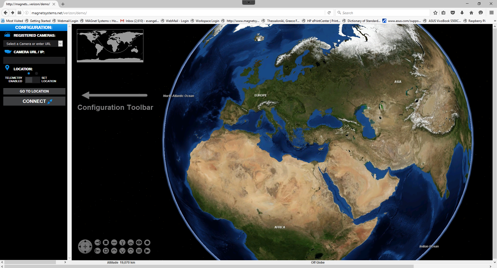

To access the web Flashlight app type http://magnetsystems.net/verizon/demo on a Mozilla Firefox address field.
The Flashlight web applet has two windows, the main map area window and the configuration panel on the left.
Run the “NEMESiS Video Streamer Application” on your Android smartphone. The application will have an empty “Name” field for entering a name that identifies your smartphone. Pick any name. This will be something like your name or any other identifier i.e. “myPhone”. After entering a unique name press the “SET NAME” button. At this point the Flashlight mobile app makes a VPN connection with the Flashlight server. Video and telemetry status shall change to “CONNECTED” as shown to the right.
Now go back to the Flashlight “Configuration” toolbar and click on the “select a camera or enter URL” drop down menu. The unique name you entered on your phone shall be shown. Click to select it and then hit the “CONNECT” button.
Drag the flashlight model (left button drag) to move it around.
Drag the flashlight model/video (right button drag) to change its altitude.
Press the left/Right arrow keys to yaw the camera projection until it fits the camera actual heading
Press the Up/Down Arrow Keys to tilt the Camera up or down until it fits the camera actual tilt angle
Press the cross at the center to reset the camera attitude
The Flashlight web application currently runs on the Mozilla Firefox or IE browser on Windows PCs for demo purposes. Future versions will run on other browsers and OSs
Currently the Flashlight web applet is around 17MB so it can take a few seconds to download for the first time. The next time it runs, it opens much faster. Also, give it some time to download the area maps. To download the maps for an area just zoom in to the desired detail using the mouse wheel.
For better results, rotate your smartphone in a landscape mode with the HOME button on the right side as seen on the picture here. The Flashlight application uses the back camera of the smartphone.